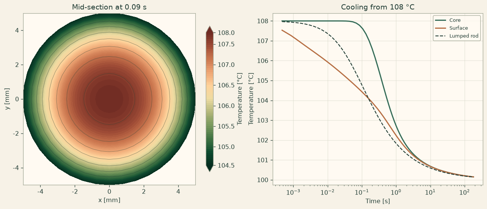
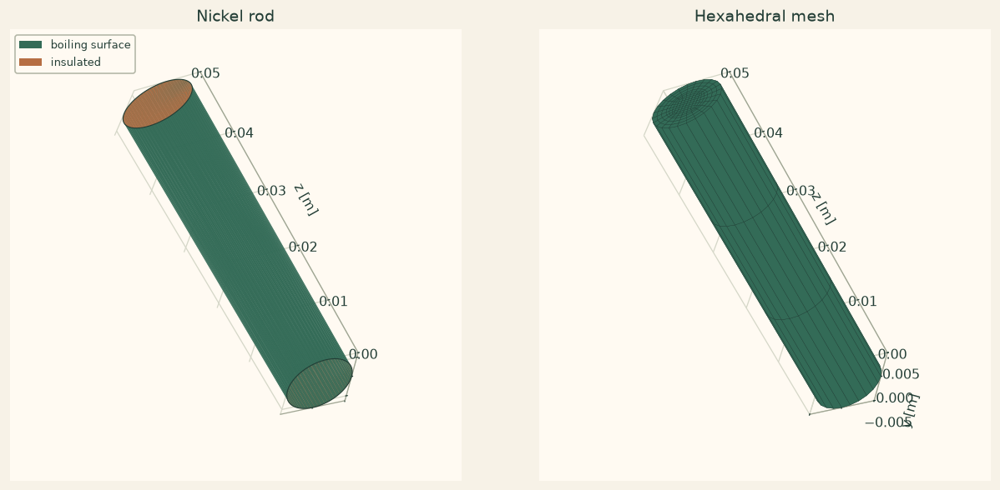

Docs › Examples › Cooling a nickel rod in boiling water
Heat transfer · 3D
Cooling a nickel rod in boiling water
A hot nickel rod cools in saturated water. See the surface cool first and compare three minutes of the transient with a lumped heat balance.
Run locally with OneSimulation. The example downloads are free. Running them requires an activated runtime. Runtime Alpha 0.2.1a8 · CPython 3.13 on macOS (Apple Silicon), Ubuntu 22.04 (x86-64), and Windows x64. Installation and activation · View pilot plans. Scope of the reference checks.


What it computes
OneSimulation solves conduction in the meshed rod with insulated ends and a Rohsenow flux on the mantle. Adaptive implicit steps follow the rapid fall in superheat. The script that builds the STEP file comes with the notebook.
What it checks
The initial heat flux is 713.1 kW/m². The core–surface gap peaks at 3.24 K. After 180 s the computed surface is 100.148 °C, within 0.008 K of the closed-form lumped estimate.
Geometry
The notebook starts at the import of the CAD file nickel_rod_boiling_quench.step: STEP (AP242), readable by any CAD program, with the names of the faces that the boundary conditions use. Put it next to the notebook.


The geometry script
The script nickel_rod_boiling_quench_geometry.py builds the geometry with the CAD objects of OneSimulation and writes the file. Change a dimension there, run it, and run the notebook again.
"""Geometry of the OneSimulation example "Cooling of a nickel rod by nucleate boiling".
Builds the nickel rod, 10 mm in diameter and 50 mm long, with the CAD objects of OneSimulation and
writes nickel_rod_boiling_quench.step. The cylindrical face is named mantle, the two end faces form
the group ends.
"""
from onesim.cad.d3 import Cylinder
rod = Cylinder(radius=0.005, length=0.050)
f = rod.boundaries
rod = rod.grouped(mantle=f.outer_wall, ends=f.top | f.bottom)
rod.save("nickel_rod_boiling_quench.step")The notebook
The complete notebook, cell by cell. Run it to produce the figures and the comparison printout.
A nickel rod starts at 108 °C in saturated water at 100 °C. Heat leaves through the curved surface. As the mantle cools, the centerline stays hot. This 3D calculation follows a 50 mm rod, 10 mm in diameter, for three minutes.
The Rohsenow pool-boiling correlation gives a wall flux \(q=C(T_w-T_{sat})^3\) for a specified fluid and surface finish. The example uses the water/nickel coefficient 0.006 and holds the same empirical law throughout the cooling curve. The late-time tail extrapolates that law as the superheat approaches zero. See W. M. Rohsenow, Transactions of the ASME 74 (1952), 969–976, and A. Bejan, Heat Transfer (1993), p. 427.
import numpy as np
from onesim.cad.d2 import Plane
from onesim.cad.exchange import load
from onesim.materials import IsotropicSolid
from onesim.meshing import Geometric, disc_blocks, extrude, merge_blocks
from onesim.numerics import Numerics
from onesim.numerics.fem import FiniteElement, Lagrange
from onesim.numerics.linear import SparseDirect
from onesim.numerics.nonlinear import Newton
from onesim.numerics.time import AdaptiveTimeStep, BackwardEuler
from onesim.physics.heat_transfer import HeatConduction, HeatFlux, NonlinearHeatFlux, rohsenow_pool_boiling_flux
from onesim.simulation import Problem, Simulation
from onesim.simulation.initial_conditions import InitialValue
from onesim.visualization import plots, theme
theme.set()Geometry and mesh
Read the rod and its named boundaries from STEP. Extrude an annular block mesh through the length. Heat leaves the mantle while the ends are insulated.
rod = load("nickel_rod_boiling_quench.step")
faces = rod.boundaries
radius, length = rod.size[0] / 2, rod.size[2]
blocks = disc_blocks((0, 0), (0.6 * radius, radius), 6, (3, 3), core=0.5)
mesh = extrude(merge_blocks(blocks, order=1), length, Geometric(3, ratio=1), geometry=rod)
camera = plots.Camera(elevation=30, azimuth=-60, roll=30, distance=1.2)
fig = plots.figure(1, 2, size=(11, 5))
plots.geometry(rod, selection={"boiling surface": faces.mantle, "insulated": faces.ends}, labels=False,
camera=camera, title="Nickel rod", ax=fig[0])
plots.mesh(mesh, groups=("all",), camera=camera, legend=False, title="Hexahedral mesh", ax=fig[1])
plots.show()Surface flux and transient conduction
The water properties are for saturation at atmospheric pressure. Evaluate the boiling law at 1 K superheat to obtain its cubic coefficient. Use the derivative \(3C(T_w-T_{sat})^2\) in the implicit solve. Adaptive stepping resolves the initial rapid cooling.
saturation, initial = 373.15, 381.15
C = float(rohsenow_pool_boiling_flux(1.0, liquid_viscosity=2.79e-4, vaporization_enthalpy=2.257e6,
gravity=9.81, density_difference=957.9 - 0.6, surface_tension=0.0589, liquid_heat_capacity=4217,
prandtl=1.76, surface_fluid_coefficient=0.006, prandtl_exponent=1))
nickel = IsotropicSolid(density=8900, specific_heat_capacity=444, thermal_conductivity=90.7,
youngs_modulus=2e11, poisson_ratio=0.31, thermal_expansion_coefficient=1.3e-5)
model = HeatConduction(domain=rod.volume, material=nickel)
problem = Problem(name="Nickel rod in saturated water", geometry=rod, physics=(model,), boundary_conditions=(
HeatFlux(physics=model, boundary=faces.ends, value=0.0),
NonlinearHeatFlux(physics=model, boundary=faces.mantle, flux=lambda T: C * np.maximum(T-saturation, 0)**3,
derivative=lambda T: 3*C * np.maximum(T-saturation, 0)**2)),
initial_conditions=(InitialValue(model.temperature, initial),))
method = Numerics(spatial=FiniteElement(element=Lagrange(order=1)), linear_solver=SparseDirect(),
nonlinear_solver=Newton(relative_tolerance=1e-7), time_integrator=BackwardEuler())
steps = AdaptiveTimeStep(initial=0.02, minimum=1e-6, maximum=10, relative_tolerance=0, absolute_tolerance=0.04)
T = Simulation(problem=problem, mesh=mesh, numerics=method).run(start_time=0, end_time=180, time_step=steps).field(model.temperature)Core, surface and lumped reference
An isothermal rod with the same heat capacity and cooled area obeys \(\rho c_p V \,d\theta/dt=-AC\theta^3\), where \(\theta=T-T_{sat}\) and \(A/V=2/R\). Its closed-form solution approaches the full field as the radial gradient fades. The early cross-section shows the gradient that the lumped calculation omits.
wall_nodes = mesh.coordinates[np.unique(mesh.facets(faces.mantle))]
wall_probe = wall_nodes[np.argmin(np.linalg.norm(wall_nodes - [radius, 0, length/2], axis=1))]
times, probes = T.time_series([[0, 0, length/2], wall_probe])
lumped = saturation + ((initial-saturation)**-2 + 4*C*times/(radius*nickel.density*nickel.specific_heat_capacity))**-0.5
print(f"Initial cooling flux: {C*(initial-saturation)**3/1e3:.1f} kW/m²")
print(f"Largest core–surface gap: {np.max(probes[:, 0]-probes[:, 1]):.2f} K")
print(f"At 180 s: core {probes[-1, 0]-273.15:.3f} °C, surface {probes[-1, 1]-273.15:.3f} °C, lumped {lumped[-1]-273.15:.3f} °C")
peak = times[np.argmax(probes[:, 0]-probes[:, 1])]
fig = plots.figure(1, 2, size=(11.5, 4.7))
plots.section(T, time=peak, plane=Plane(origin=(0, 0, length/2), normal=(0, 0, 1)),
component=lambda T, position: T-273.15, length_unit="mm", contours=8, subdivisions=3,
title=f"Mid-section at {peak:.2f} s", label="Temperature [°C]", ax=fig[0])
plots.line(times[1:], {"Core": probes[1:, 0]-273.15, "Surface": probes[1:, 1]-273.15},
reference={"Lumped rod": lumped[1:]-273.15}, scale="logx", xlabel="Time [s]",
ylabel="Temperature [°C]", title="Cooling from 108 °C", ax=fig[1])
plots.show()